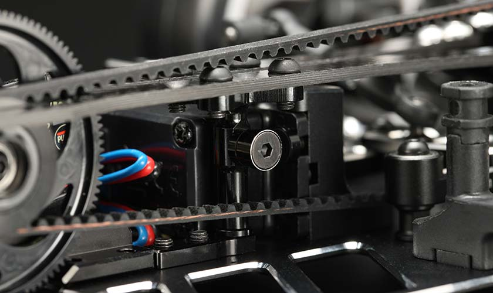

0512進捗更新
■これから何をしていくか、何を体現していくか
考えた事
・ラジコンカーの開発をしていくにあたって、行動していくには株式会社ヨコモの提供によって、自分の最大限考えたことを具現化していくのはできるようになった。
その中で、今の私にしかできないことは、ラジコンの開発をしていくことではないと考える。
だから私は、今のラジコン業界の中で、私の存在意義を出していく事が重要ではないか。ラジコンの開発では、存在意義を業界に示していくのは難しいと考えた。
その理由は、私がこのラジコン業界で、存在意義を示すことによって、自分の理想とするラジコンプレーヤーになれると思うからだ。
いかにこの業界から大切にされるか？それが今後のプロ選手としての鍵を握ると考えた。
業界・会社に使われる存在ではなく、自分の存在意義を作っていく。
今後自分が行っていきたいと考えたこと
・ラジコンカーの新しい楽しみ方を提案する
・『新しい販売促進スタイル』自分のブランドを会社と離れたところで作っていく。（具体的に今現在サブスポンサーとして、提供を受けている会社の商品の販売、３Dプリンターなどで製作したオリジナルパーツの販売）
・現在ラジコンカーの業界においての分析（販売方法やどのような商品を展開していくのか）
考えたことから行動すること
・株式会社ヨコモのデータから、ラジコンカーを購入してから、手放すまでの期間を調べる。これから、ラジコンカーを２倍長く楽しんでもらう方法を考える。（とりあえず２倍を目標にする）
・今のラジコンカーの楽しみ方を言語化する。今のラジコンカーの楽しみ方と他の娯楽スポーツの感じる感情を比較し、ラジコンにない感情を具体化し、比較したスポーツを自分で体験してみて、どのような感情がうまれるのか体験する。
■ラジコンカーのトラブルをなくすパーツ開発
・ラジコンカーはモーターからプーリーを回し、それを2つのベルトで、駆動させ、４輪に動力を伝えていますが、その2つのベルトは、1分間に４００００回転します。

・そのベルトは高回転で回るため、消耗が早く、トラブルが起きやすい場所でした。それを解決するために負荷がかかりやすいフロントにベルトを規制し、駆動を安定させるフロントベルトテンショナーを製作しました。
ベアリングでテンションをかけることによって、ベルトへの負荷を最小限にしながら、ベルトを安定させます。
また使用するベアリングのサイズを変更できるようになっており、ベアリングの大きさを変更することで、ベルトのテンション具合を細かく調整できます！

考えたことを形にしてみました♡